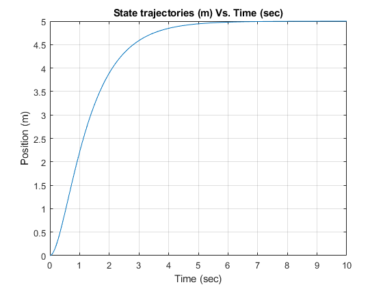
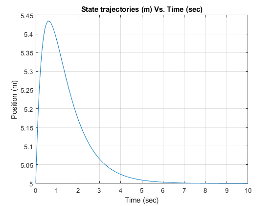

Contents
HW2 Farid Tavakkolmoghaddam
clc; clear;
A=[0 1;-0.4 -0.2];
B=[0;0.2];
C=[1 0];
D=0;
x0 = [0 0];
sys_open_loop=ss(A,B,C,D)
P=[-1 -2.5];
disp('desired K that places the poles at the -1 , -2.5 :')
K=place(A,B,P)
disp('desired Kr that places the poles at the -1 , -2.5 :')
Kr=-inv(C*inv((A-B*K))*B)
sys_closed_loop=ss(A-B*K,B*Kr,C,D)
t = 0:0.01:10;
u = 5*ones(size(t));
[y,t,x] = lsim(sys_closed_loop,u,t,x0);
figure('Name','With the equilibrium initial condition')
plot(t,y)
title('State trajectories (m) Vs. Time (sec)')
xlabel('Time (sec)')
ylabel('Position (m)')
grid
sys_open_loop =
A =
x1 x2
x1 0 1
x2 -0.4 -0.2
B =
u1
x1 0
x2 0.2
C =
x1 x2
y1 1 0
D =
u1
y1 0
Continuous-time state-space model.
desired K that places the poles at the -1 , -2.5 :
K =
10.5000 16.5000
desired Kr that places the poles at the -1 , -2.5 :
Kr =
12.5000
sys_closed_loop =
A =
x1 x2
x1 0 1
x2 -2.5 -3.5
B =
u1
x1 0
x2 2.5
C =
x1 x2
y1 1 0
D =
u1
y1 0
Continuous-time state-space model.

Trying with the different initial position and velocity
x0 = [5 2];
[y,t,x] = lsim(sys_closed_loop,u,t,x0);
figure('Name','With different initial condition')
plot(t,y)
title('State trajectories (m) Vs. Time (sec)')
xlabel('Time (sec)')
ylabel('Position (m)')
grid
